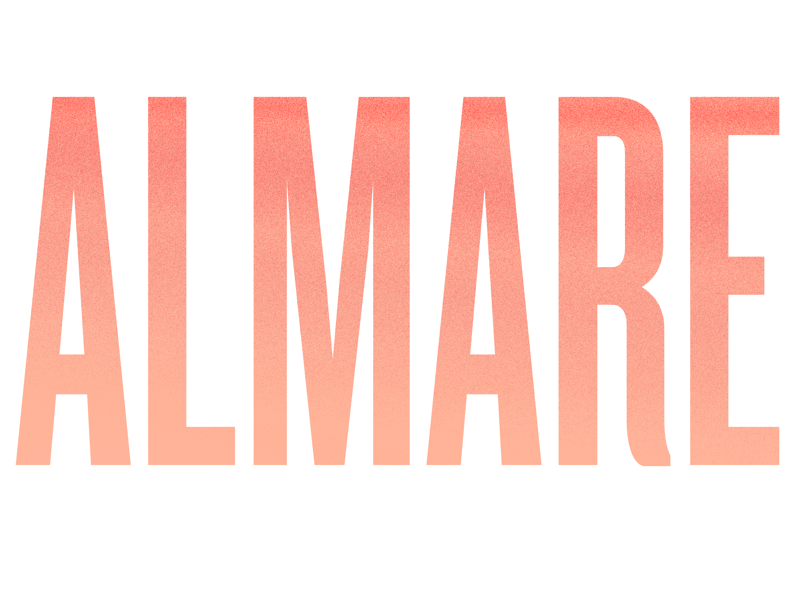
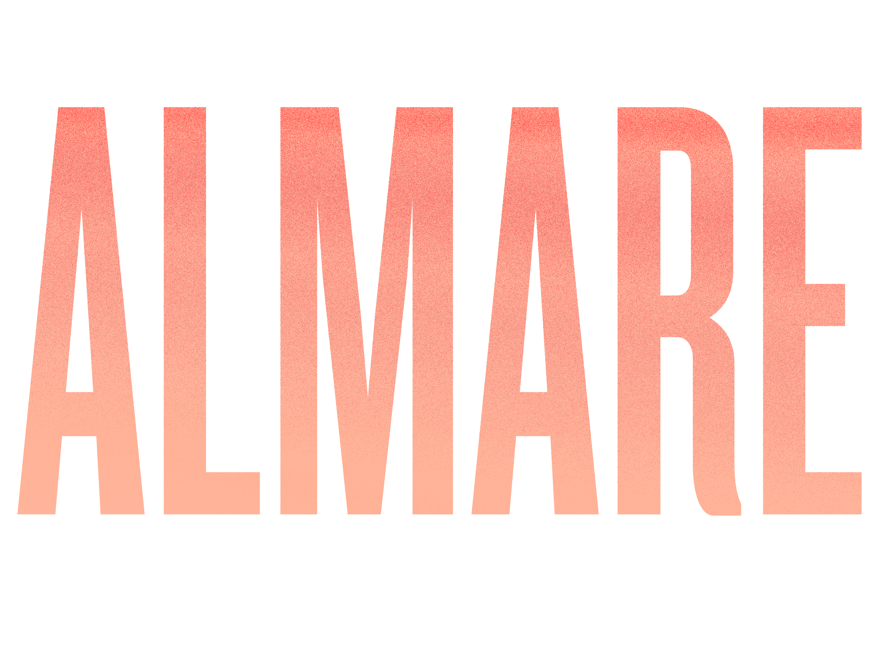

BLUTWURST – Parva Lumina | Giovanni di Domenico
26.11.2021
Chiesa di Stella Maris
Milano Marittima
21.00
Mu ritorna a novembre e dicembre con quattro appuntamenti autunnali, realizzati in collaborazione con Metamorfosi Notturne e Almare.
BLUTWURST – Parva Lumina Live per organo ed elettronica
Parva Lumina è un brano per organo a canne, elettronica e nastro magnetico dedicato al compositore e artista Fluxus Giuseppe Chiari (Firenze, 1926-2007). L’idea del brano nasce dalla realizzazione di La Luce, partitura testuale dell’artista fiorentino contenuta nella raccolta di scritti, partiture e opere Musica Madre.
Marco Baldini – elettronica
Daniela Fantechi – elettronica
Luisa Santacesaria – organo a canne
Giovanni di Domenico – Live per solo organo
Giovanni Di Domenico realizzerà nella chiesa di Stella Maris un concerto per solo organo, sfruttando le possibilità acustiche e spaziali del luogo e dell’organo a 2859 canne ospitato nella chiesa, strumento unico nel suo genere.
Chiesa di Stella Maris – Via III Traversa, Milano Marittima (RA)
Ingresso 5€
Omaggio per studenti e disabili.
Evento realizzato da MU in collaborazione con Metaforfosi Notturne e Almare nell’ambito del progetto The Listeners, con il sostegno del Ministero della Cultura e con il supporto di Magma.
Progetto grafico di Mote Studio.
Per la partecipazione all’evento è richiesto il Green Pass rafforzato, valido per vaccinati o guariti dal Covid-19.
Maggiori informazioni: info@mmmu.it
 
